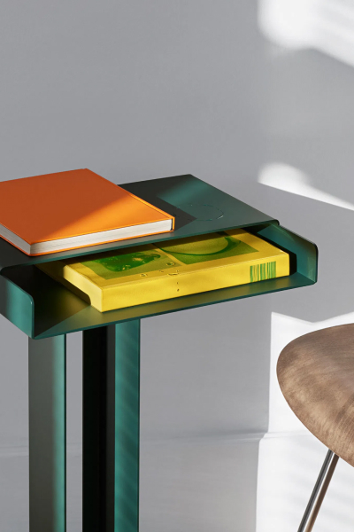
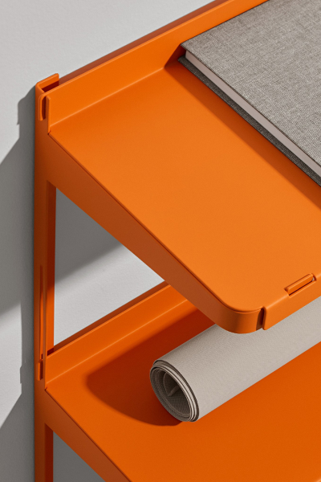
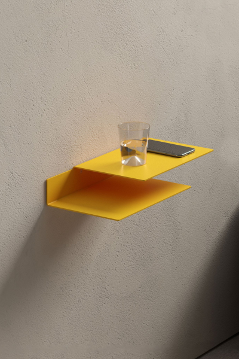

The Meta Side Table is one of our signature pieces and well suited to all communal living spaces and bedrooms. Consisting of a series of arranged, powder coated rectangular and circular shapes, Meta’s appearance changes from delicate and thin, to substantial and full depending on the viewing angle. Featuring multi-directional storage for your reading material and an even top for decorative accessories.
Meta Side Table
The Meta Side Table is one of our signature pieces and well suited to all communal living spaces and bedrooms. Consisting of a series of arranged, powder coated rectangular and circular shapes, Meta’s appearance changes from delicate and thin, to substantial and full depending on the viewing angle. Featuring multi-directional storage for your reading material and an even top for decorative accessories.

Click is a boltless shelving system. The minimalistic form and construction, as well as the visual lightness, form the aesthetic characteristics of the shelf. Constructed of 1.5mm thin sheet steel, a girder and shelves, the system functions similar to a construction kit. Only four screws fix the girder together to which the shelves are simply hung up without any tools. The material and precision of the components guarantee the stability and assembly.
Click Shelf
Click is a boltless shelving system. The minimalistic form and construction, as well as the visual lightness, form the aesthetic characteristics of the shelf. Constructed of 1.5mm thin sheet steel, a girder and shelves, the system functions similar to a construction kit. Only four screws fix the girder together to which the shelves are simply hung up without any tools. The material and precision of the components guarantee the stability and assembly.

Designed as a versatile storage option, the Float Shelf is open to diverse interpretations – holding a book as a bedside or side table, bearing weight as wall console, storing a magazine collection, serving as a compact standing desk, or safeguarding small personal essentials as a hallway tray. The Float Shelf equally adds a touch of character to hotel rooms, boutique accommodation and boardinghouses. Embodying purity at its most elegant degree, the strict geometry of this wall-mounted shelf lends its form a sculptural appeal. The Float Shelf consists of two offset levels cut from a single sheet of aluminum, with a simple two-fold composition allowing for flexible placement, use and display. Referencing the reduced aesthetic principles of modernism in the Bauhaus tradition, its design distils the essence of a shelf.
Float Shelf
Designed as a versatile storage option, the Float Shelf is open to diverse interpretations – holding a book as a bedside or side table, bearing weight as wall console, storing a magazine collection, serving as a compact standing desk, or safeguarding small personal essentials as a hallway tray. The Float Shelf equally adds a touch of character to hotel rooms, boutique accommodation and boardinghouses. Embodying purity at its most elegant degree, the strict geometry of this wall-mounted shelf lends its form a sculptural appeal. The Float Shelf consists of two offset levels cut from a single sheet of aluminum, with a simple two-fold composition allowing for flexible placement, use and display. Referencing the reduced aesthetic principles of modernism in the Bauhaus tradition, its design distils the essence of a shelf.